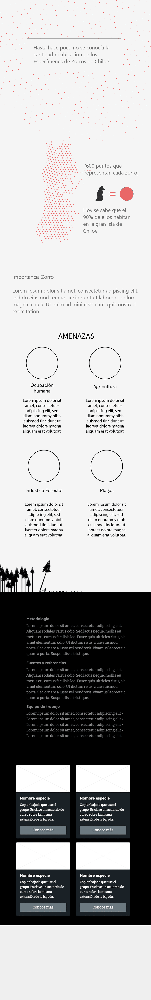
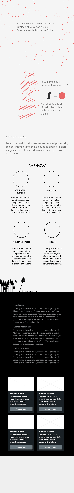

Colores
La paleta cromática construida para la infografía del Zorro Chilote se compone de dos tonos de grises, uno claro y otro oscuro que servirán de fondo en diferentes secciones del sitio, dependiendo de su contenido. Para generar acentos en elementos destacados se hará uso de un color rojizo principal, similar al del pelaje de las orejas del Zorro, mientras que para elementos secundarios se hará uso de dos tonos pastel de verde y azul.
Tipografías
Lexend (Regular & Semi-Bold)
Las fuentes Lexend están destinadas a reducir el estrés visual y así mejorar el rendimiento de lectura.

Bitter (Regular)
Esta fuente se diseñó en un principio para leer cómodamente en cualquier dispositivo, ya sea computador o teléfono. Partió de la austeridad de la cuadrícula del pixel.
Gráficos
Anatomía - Figurativo
Gráfico figurativo, llamado Illustration Diagram según DataVizCatalogue que muestra una ilustración del zorro con un énfasis en sus particularidades fisiológicas, tales como su audición, sus patas, entre otras.
Hábitos-No figurativo
Gráfico no figurativo, llamado Radar Chart según DataVizCatalogue, que exhibe los patrones de actividad horaria del zorro de Chiloé.
Mapa Conceptual- No figurativo
Gráfico no figurativo, llamado Tree Diagram según DataVizCatalogue, el que busca mostrar el despliegue de las familias a la que pertenece el zorro de Chiloé y cuáles otros pertenecen a la misma.
Chiloé- No figurativo
Gráfico no figurativo, basado en la idea de un Dot Map definido en DataVizCatalogue, este busca mostrar que se sabe la población actual, pero no se sabe cuántos especímenes se extinguieron. Particularmente, la población se encuentra fragmentada en dos grupos, la más grande se encuentra situada en la Isla de Chiloé y la con menos individuos se encuentra en el Parque Nacional de Nahuelbuta.
Hábitat-Figurativo
Gráfico figurativo, llamado Illustration Diagram según DataVizCatalogue, que muestra una ilustración del hábitat del Zorro de Chiloé con un énfasis en las particularidades del lugar, tales como la temperatura, árboles, especies, etc.
Extinción - Mixto
Gráfico mixto que muestra el estado de extinción del zorro de Chiloé en comparación a otros zorros presentes en Chile.